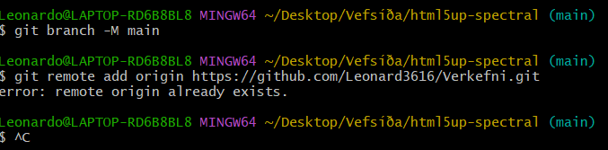
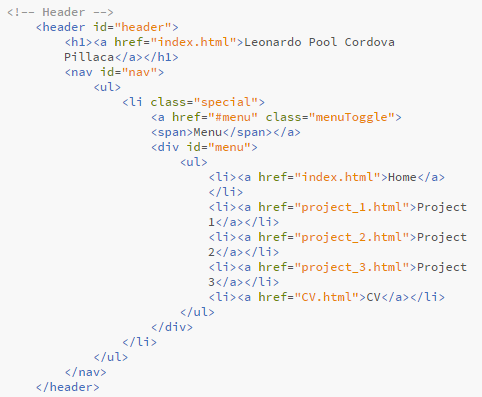
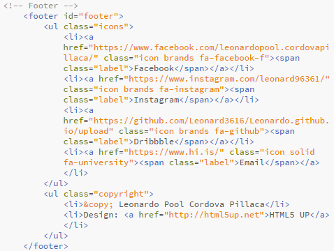

Project 1
Creating a website
Introduction
In this first projet we will create a website using by using an html template. In this project, I will provide a step-by-step explanation of the process used to create this website, detailing what was learned along the way.
Creation process
To begin the creation of this website, I watched the video tutorial related to the first project provided by the teacher which helped a lot in this process.
I started by checking out templates in HTML5 UP and decided to go for the one call Spectral.
To start editing this template I used Brackets there were other options, but I desided to use it because, as shown in the video tutorials, it was possible to have a live preview of the website, which came in really handy in the process.
Upload to Github
To uploaded the website to Github, it was necessary to crate a new repository on Github. To upload to Github, we will use the Git program and opening our template file with Git bash.
"echo "#Verkefni" >>
git init
git add README.md
git commit -m "first commit"
git branch -M main
git remote add origin https://github.com/Leonard3616/Verkefni.git
git push -u origin main
While using git to upload it using git bash we encounter an error:

After some research online, I found the solution, which involved entering the command "git remote remove origin" in Git bash.
After that the problem was solved and it was possible to upload the template to Github.
Now we were able to get the link from Github for our website.
Editing the template
At the start, I had to make several changes regarding the appearance and my own text in the template. For example, the changes made in the menu bar, where I had to add new URLs for every option to ensure proper functionality for each option in the menu bar.

Every other detail, such as adding pictures or making changes to the appearance of the template, became much more manageable with the assistance of w3schools as the setting of URLs within the text with the use of codes as:
<a href="url">Name of the url</a>: to set a new url.
<img src="location">: to set a new picture.
Then in the footer I had to change the text and als to every link will take to my personal social medias:

CV edition
In this section I already had a CV that I used to apply for some jobs in the last year so I had to just updated a bit.
Final steps
After all the new changes we just need to upload it in our link on Github. We will use again Git bash to do so with the following code:
$ git add .
$ git commit -m 'New changes'
$ git push
Objectives of the course
My objectives in this course are to gain a comprehensive understanding of website development, focusing on creating a well-structured and visually appealing website.